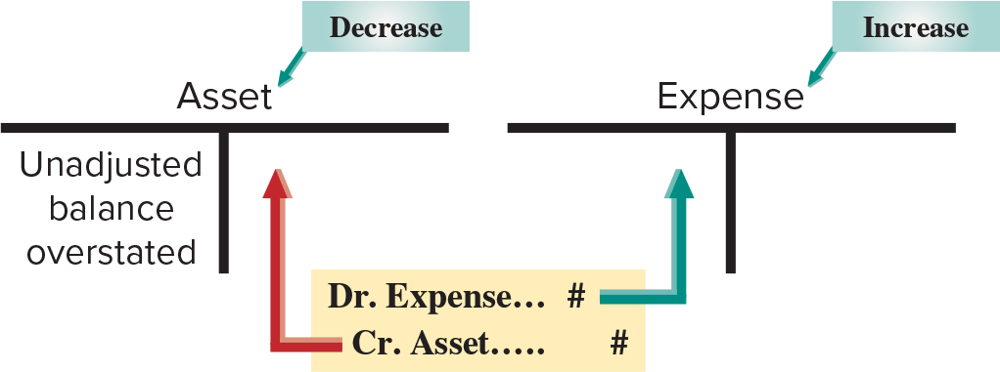
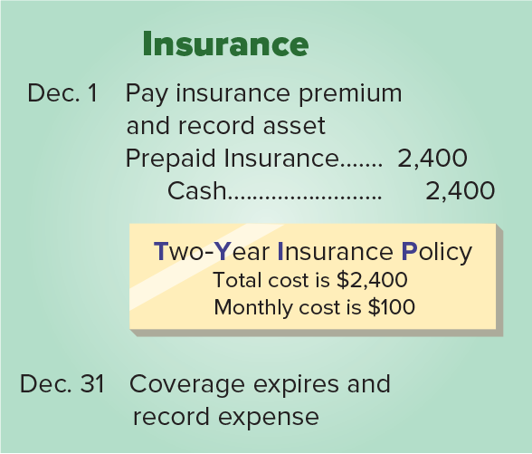
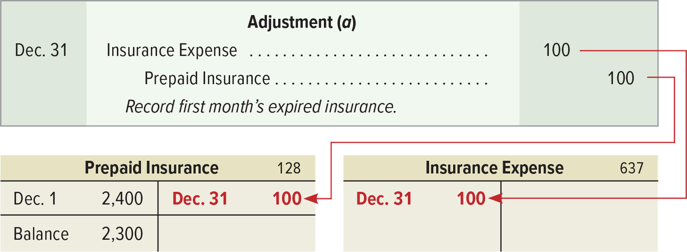
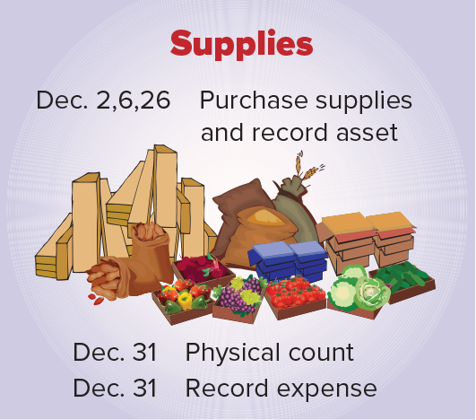
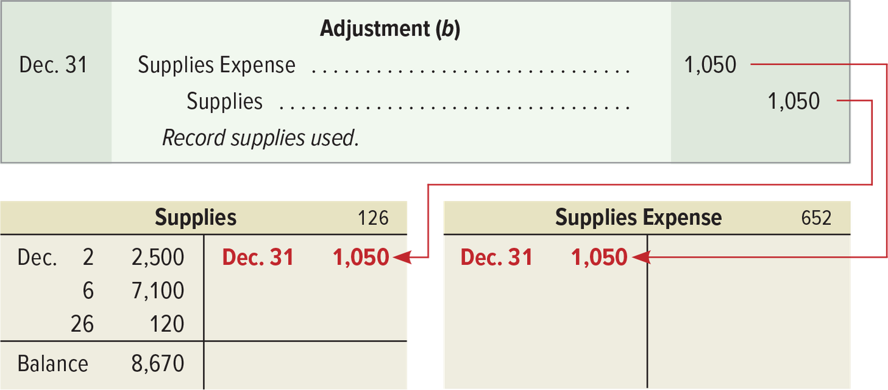
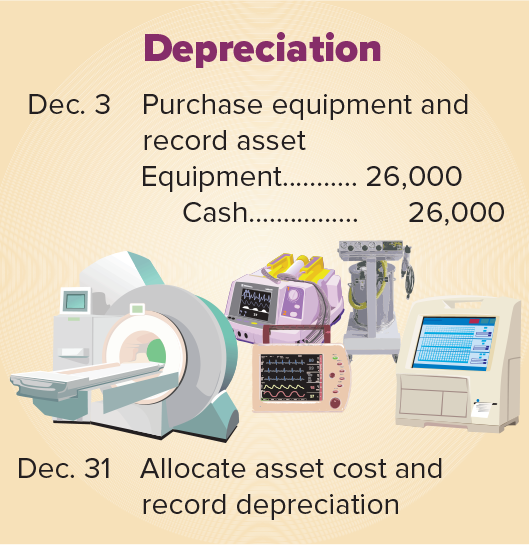
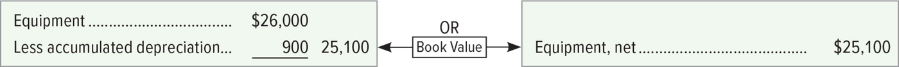
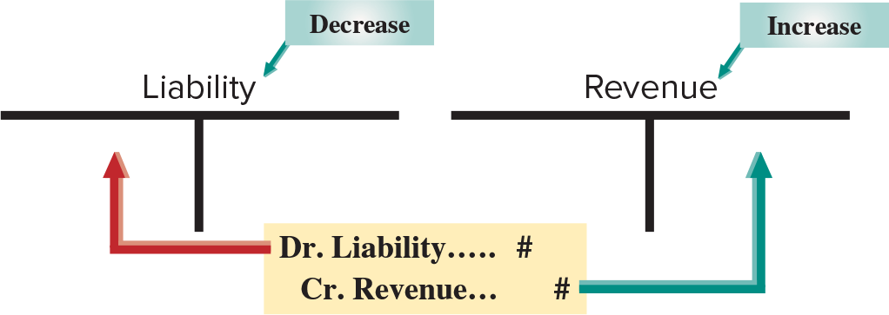
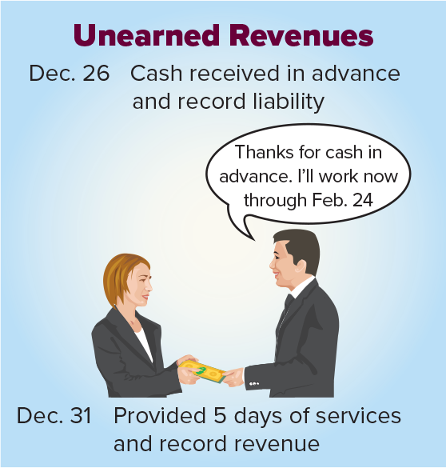
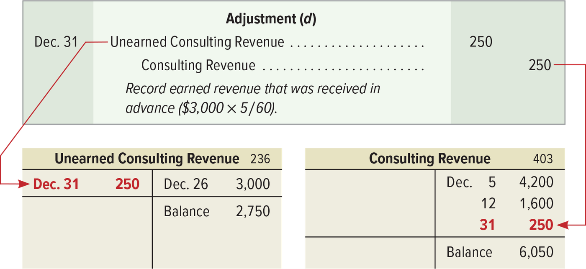

الفصل الثالث — تسويات المؤجّلات: المصروفات المدفوعة مقدّماً والإيرادات غير المكتسبة
ACCT 203 · مبادئ المحاسبة المالية · Chapter 3: Adjusting Accounts for Financial Statements · القسم ٢ من ٤:
Deferral of Expense and Revenue
الهدف P1: Prepare adjusting entries for deferral of expenses.
الهدف P2: Prepare adjusting entries for deferral of revenues.
هذا القسم «فلوس تحرّكت بدري، والتسوية ترجّعها لشهرها الصح»
في الدرس اللي قبل عرفت إن فيه أربع أنواع من التسويات، وإن كل تسوية تمشي على ثلاث خطوات (Exhibit 3.4): ١) وش الرصيد الحين؟ ٢) وش المفروض يكون؟ ٣) قيد تسوية (adjusting entry) يوصّلك من الأول للثاني. هنا ناخذ أول نوعين — المؤجّلات (deferrals)، يعني الفلوس تحرّكت قبل ما تجي الفايدة أو الخدمة:
- تأجيل المصروف (Deferral of Expense، الهدف
P1): دفعت قبل ما تستفيد ← عندك أصل، ومع الاستخدام يتحوّل مصروف. أمثلة الكتاب: التأمين، المستلزمات، الإهلاك. - تأجيل الإيراد (Deferral of Revenue، الهدف
P2): قبضت قبل ما تقدّم الخدمة ← عليك التزام، ومع التقديم يتحوّل إيراد.
الكتاب يكمّل على شركة FastForward ويعطي كل تسوية حرف: (a) التأمين، (b) المستلزمات، (c) الإهلاك، (d) الإيراد غير المكتسب. احفظ الحروف — بترجع لك في ميزان المراجعة المعدّل (adjusted trial balance) في الدرس الجاي. والقاعدة اللي تمسك كل شي: قيد التسوية يمس حساب قائمة دخل أو أكثر وحساب ميزانية أو أكثر، وما يمس Cash (النقد) أبداً. الأسئلة هنا كلها أرقام: كم المصروف؟ وش القيد؟ كم الرصيد بعد التسوية؟ فركّز على الجداول والقيود.
Prepaid expenses = أصل دفعت فلوسه قبل ما تاخذ فايدته. وكل ما استخدمته، جزء منه يصير مصروف. قيد التسوية: مدين المصروف، دائن الأصل — بس في الإهلاك الدائن Accumulated Depreciation (مجمّع الإهلاك).
Prepaid expenses (مصروفات مدفوعة مقدّماً)، واسمها الثاني deferred expenses (مصروفات مؤجّلة)، هي أصول دفعت قيمتها قبل ما تستلم منافعها. ولما تستخدم هالأصول، الدفعات المقدّمة هذي تتحوّل مصروفات.
الإطار (Framework): قيود التسوية للمصروفات المدفوعة مقدّماً تزيد المصروفات وتنقص الأصول — يعني التسوية تبيّن استهلاك المدفوع مقدّماً (the using up of prepaid expenses). الكتاب يشرحها بـثلاث أمثلة:
- Prepaid insurance — التأمين المدفوع مقدّماً (هذا المفهوم)
- Supplies — المستلزمات (المفهوم الثاني)
- Depreciation — الإهلاك (المفهوم الثالث)
وفي الثلاث نفس الحركة: ننقص حساب أصل (من الميزانية — balance sheet) ونزيد حساب مصروف (من قائمة الدخل — income statement).

هذا هو Exhibit 3.5. فيه حسابين على شكل T (T-accounts): يسار Asset ومكتوب فوقه Decrease، وفي جهته المدينة مكتوب Unadjusted balance overstated (الرصيد قبل التسوية أكبر من الصح). يمين Expense ومكتوب فوقه Increase. وتحتهم القيد Dr. Expense… # / Cr. Asset… #: سهم أخضر من المدين يطلع لجهة المدين في المصروف، وسهم أحمر من الدائن يطلع لجهة الدائن في الأصل. كيف تقرأه: نفس المبلغ ينقص الأصل ويزيد المصروف. وش يجي منه بالاختبار: اتجاه القيد، وإن الأصل قبل التسوية overstated.
التأمين المدفوع مقدّماً ينتهي مع الوقت (expires with time). في 1 ديسمبر دفعت FastForward $2,400 عن بوليصة 24 شهر وسجّلتها أصل:

الشكل يمشي بالتاريخ: Dec. 1 Pay insurance premium and record asset — القيد Prepaid Insurance 2,400 / Cash 2,400. وفي الورقة الصفرا: Two-Year Insurance Policy، التكلفة الكلية $2,400 والشهرية $100. وآخر الشكل Dec. 31 Coverage expires and record expense — هذا مكان قيد التسوية.
| Date | Account titles and explanation | Debit | Credit |
|---|---|---|---|
| Dec. 1 | Prepaid Insurance | 2,400 | |
| Cash | 2,400 | ||
| Pay insurance premium and record asset. |
يعني: هذا مو قيد تسوية — هذا قيد الدفع نفسه. أصل (Prepaid Insurance) زاد بالمدين، وأصل ثاني (Cash) نقص بالدائن.
| الخطوة | وش تسوي | في مثال التأمين |
|---|---|---|
| Step 1 | وش الرصيد الحين؟ | Prepaid Insurance = $2,400 — الدفعة كاملة عن 24 شهر بدأت 1 ديسمبر 2021. |
| Step 2 | وش المفروض يكون؟ | منافع التأمين تنتهي مع الوقت، وجزء من الأصل يصير مصروف. بنهاية 31 ديسمبر انتهى شهر واحد: 1/24 × $2,400 = $100، فالباقي $2,300. |
| Step 3 | قيد التسوية | تحت ↓ |
| Date | Account titles and explanation | Debit | Credit |
|---|---|---|---|
| Adjustment (a) | |||
| Dec. 31 | Insurance Expense | 100 | |
| Prepaid Insurance | 100 | ||
| Record first month’s expired insurance. |
يعني: Insurance Expense (مصروف التأمين) زاد ← المصروف يزيد بالمدين؛ وPrepaid Insurance نقص ← الأصل ينقص بالدائن. أثرها على المعادلة: Assets −100 = Liabilities + Equity −100 (المصروف ينقص حقوق الملكية).

فوق القيد Adjustment (a)، وتحته الترحيل لحسابين T: Prepaid Insurance (رقم 128): مدين Dec. 1 2,400، دائن Dec. 31 100 بالأحمر، والرصيد 2,300. وInsurance Expense (رقم 637): مدين Dec. 31 100. تشييك: 2,400 − 100 = 2,300 ✓. الأرقام الحمرا = اللي جاي من قيد التسوية.
بعد التسوية والترحيل، رصيد Insurance Expense = $100 ورصيد Prepaid Insurance = $2,300 — جاهزين للقوائم المالية:
| قبل التسوية | التسوية | بعد التسوية |
|---|---|---|
| Prepaid Insurance = $2,400 | اطرح 100 من Prepaid Insurance وزد 100 على Insurance Expense | Prepaid Insurance = $2,300 |
| يعرض بوليصة 2,400 تغطي 24 شهر | يسجّل مصروف تأمين الشهر الحالي 100، ونقص 100 في المدفوع مقدّماً | يعرض 2,300 تغطية للـ 23 شهر الباقية |
لو ما سوّيت التسوية: Insurance Expense ناقص 100 (understated) ← صافي الدخل أكبر من الصح بـ 100 (overstated) ← حقوق الملكية أكبر بـ 100؛ وPrepaid Insurance أكبر من الصح بـ 100 ← الأصول overstated.
رصيد Prepaid Insurance أول السنة $5,000 مدين، وما فيه أي دفعات تأمين خلال السنة. مراجعة البوالص تبيّن إن الباقي غير المنتهي في 31 ديسمبر = $1,000.
- Step 1: Prepaid Insurance = $5,000 (قبل التسوية)
- Step 2: المفروض = $1,000 (الجزء اللي ما انتهى)
- Step 3: القيد يغطّي الفرق
| Date | Account titles and explanation | Debit | Credit |
|---|---|---|---|
| Dec. 31 | Insurance Expense | 4,000 | |
| Prepaid Insurance | 4,000 | ||
| Record expired insurance coverage ($5,000 − $1,000). |
يعني: المصروف = المنتهي (4,000)، مو الباقي (1,000). مصروف زاد بالمدين، أصل نقص بالدائن.
Prepaid expenses, or deferred expenses, are assets paid for in advance of receiving their benefits. When these assets are used, those advance payments become expenses.
Adjusting entries for prepaid expenses increase expenses and decrease assets, as shown in the T-accounts of Exhibit 3.5. This adjustment shows the using up of prepaid expenses. To demonstrate accounting for prepaid expenses, we look at prepaid insurance, supplies, and depreciation. In each case we decrease an asset (balance sheet) account and increase an expense (income statement) account.
Prepaid insurance expires with time. After adjusting and posting, the $100 balance in Insurance Expense and the $2,300 balance in Prepaid Insurance are ready for reporting in financial statements.
- الاتجاه: مدين المصروف، دائن الأصل. اختيار فيه «Debit Prepaid Insurance; credit Insurance Expense» = مقلوب.
- Prepaid Insurance أصل — مو مصروف ومو التزام. يصير مصروف بس لما ينتهي.
- قيد التسوية ما فيه Cash. النقد طلع يوم 1 ديسمبر وخلص؛ أي اختيار فيه Cash مدين أو دائن في التسوية = غلط.
- المصروف = الجزء المنتهي (expired)، مو الباقي. في NTK 3-1 الباقي 1,000 والمصروف 4,000.
- قسّم على عدد شهور البوليصة (24)، مو 12: 2,400 ÷ 24 = 100.
المستلزمات ما تنتهي بالوقت — تنعدّ. المصروف = الرصيد قبل التسوية − الباقي بالعدّ. والقيد: مدين Supplies Expense (مصروف المستلزمات)، دائن Supplies (المستلزمات).
نعدّ المستلزمات آخر الفترة عشان نعرف المستخدم، وبعدين نسوي قيد التسوية.

الشكل: Dec. 2, 6, 26 Purchase supplies and record asset — ثلاث مشتريات كل وحدة انسجّلت أصل. وبعدها Dec. 31 Physical count (جرد فعلي)، وDec. 31 Record expense. يعني: العدّ أول، والقيد بعده.
| الخطوة | في مثال المستلزمات |
|---|---|
| Step 1 | اشترت FastForward مستلزمات بـ $9,720 في ديسمبر، واستخدمت جزء منها في نفس الشهر. ولما تجهّز القوائم في 31 ديسمبر، تكلفة المستخدم في ديسمبر تنسجّل مصروف. |
| Step 2 | جردت (physically counts) الباقي في 31 ديسمبر ولقت $8,670 من أصل $9,720. الفرق 9,720 − 8,670 = 1,050 = مصروف المستلزمات لشهر ديسمبر. |
| Step 3 | قيد التسوية تحت ↓ |
| Date | Account titles and explanation | Debit | Credit |
|---|---|---|---|
| Adjustment (b) | |||
| Dec. 31 | Supplies Expense | 1,050 | |
| Supplies | 1,050 | ||
| Record supplies used. |
يعني: Supplies Expense زاد ← مصروف يزيد بالمدين؛ وSupplies نقص ← أصل ينقص بالدائن. أثرها على المعادلة: Assets −1,050 = Liabilities + Equity −1,050.

حساب Supplies (رقم 126): المدين فيه المشتريات الثلاث — Dec. 2 2,500، Dec. 6 7,100، Dec. 26 120، والدائن Dec. 31 1,050، والرصيد 8,670. وSupplies Expense (رقم 652): مدين Dec. 31 1,050. تشييك: 2,500 + 7,100 + 120 = 9,720 و9,720 − 1,050 = 8,670 ✓.
رصيد Supplies بعد الترحيل = $8,670 — يساوي تكلفة المستلزمات الباقية.
| قبل التسوية | التسوية | بعد التسوية |
|---|---|---|
| Supplies = $9,720 | اطرح 1,050 من Supplies وزد 1,050 على Supplies Expense | Supplies = $8,670 |
| يعرض 9,720 مستلزمات | يسجّل 1,050 مستلزمات مستخدمة و1,050 مصروف مستلزمات | يعرض 8,670 مستلزمات |
لو ما سوّيت التسوية: الأصل Supplies أكبر من الصح بـ 1,050 (overstated)، وSupplies Expense ناقص 1,050 (understated) ← صافي الدخل وحقوق الملكية overstated بـ 1,050.
رصيد Supplies أول السنة $1,000 مدين. اشترت خلال السنة مستلزمات بـ $2,000 وسجّلتها مدين في Supplies. الجرد في 31 ديسمبر: الباقي $500.
- Step 1: Supplies = $3,000 (من 1,000 + 2,000؛ قبل التسوية)
- Step 2: المفروض = $500 (الباقي)
- Step 3: المستخدم 1,000 + 2,000 − 500 = 2,500
| Date | Account titles and explanation | Debit | Credit |
|---|---|---|---|
| Dec. 31 | Supplies Expense | 2,500 | |
| Supplies | 2,500 | ||
| Record supplies used. |
يعني: لا تنسى رصيد أول السنة — المستخدم 2,500 مو 1,500. مصروف زاد بالمدين، أصل نقص بالدائن.
- مصروفات زي Prepaid Rent (إيجار مدفوع مقدّماً) وPrepaid Advertising (إعلان مدفوع مقدّماً) تتعالج بالضبط زي التأمين والمستلزمات.
- الاستثناء: بعض المصروفات المدفوعة مقدّماً تندفع وتنستهلك كلها في نفس الفترة. مثال الكتاب: شركة تدفع الإيجار الشهري أول يوم من كل شهر. هنا نسجّل النقد المدفوع مدين Rent Expense (مصروف الإيجار) على طول، بدل حساب أصل — وما تحتاج تسوية.
Need-To-Know 3-1 (الإيجار): في 1 أكتوبر دفعت الشركة $12,000 إيجار سنة مقدّم لمرافق تشغلها من ذاك اليوم، وسجّلت مدين Prepaid Rent ودائن Cash بـ 12,000. القوائم في 31 ديسمبر.
- Step 1: Prepaid Rent = $12,000 (قبل التسوية)
- Step 2: المفروض = $9,000 (الجزء غير المنتهي): 12,000 − 3,000 = 9,000، و3,000 جاية من (12,000 ÷ 12 months) × 3 months — أكتوبر ونوفمبر وديسمبر
| Date | Account titles and explanation | Debit | Credit |
|---|---|---|---|
| Dec. 31 | Rent Expense | 3,000 | |
| Prepaid Rent | 3,000 | ||
| Record expired prepaid rent. |
يعني: Rent Expense زاد بالمدين (مصروف)، وPrepaid Rent نقص بالدائن (أصل) — نفس شكل التأمين بالضبط.
من صندوق Decision Maker (مستثمر): ناشر وقّع مع رياضي أولمبي يكتب كتاب، ودفع له $500,000 توقيع + حقوق (royalties) مستقبلية، وكتب في الإيضاحات إن المدفوع مقدّماً فيه 500,000 رسوم توقيع «تنقابل مع مبيعات مستقبلية متوقّعة». جواب الكتاب: المدفوع مقدّماً أصل ينصرف مع الاستخدام؛ وكمستثمر يقلقك خطر مبيعات الكتاب — كل ما كانت المبيعات أخطر، كل ما مال تحليلك يعامل الـ 500,000 (أو جزء منها) مصروف، مو أصل.
We count supplies at period-end to find the amount used and then make an adjusting entry. The balance of the Supplies account is $8,670 after posting—equaling the cost of the remaining supplies.
Other prepaid expenses, such as Prepaid Rent and Prepaid Advertising, are accounted for exactly as insurance and supplies are.
Some prepaid expenses are both paid for and fully used up within a single period. One example is when a company pays monthly rent on the first day of each month. In this case, we record the cash paid with a debit to Rent Expense instead of an asset account.
- مصروف المستلزمات = المستخدم (الفرق)، مو الباقي بالعدّ. الاختيار اللي يحط 8,670 أو 500 كمصروف = غلط.
- رصيد أول الفترة + المشتريات − الباقي. في NTK 3-1: 1,000 + 2,000 − 500 = 2,500، والفخ 2,000 − 500 = 1,500 (نسي الرصيد الافتتاحي).
- الإيجار من 1 أكتوبر: المنتهي 3 شهور بس (أكتوبر–ديسمبر) = 3,000، والباقي في Prepaid Rent = 9,000.
- إيجار ينصرف وينستهلك في نفس الشهر ← مدين Rent Expense من البداية، ما فيه أصل ولا قيد تسوية.
Depreciation = توزيع تكلفة الأصل الثابت على عمره الإنتاجي — مو قياس نزول سعره في السوق. القيد: مدين Depreciation Expense (مصروف الإهلاك)، دائن Accumulated Depreciation (مجمّع الإهلاك).
فيه فئة خاصة من المصروفات المدفوعة مقدّماً هي plant assets (الأصول الثابتة)، واسمها الثاني Property, Plant, & Equipment (PP&E):
- أصول ملموسة طويلة الأجل (long-term tangible assets) تنستخدم في إنتاج وبيع المنتجات والخدمات.
- أمثلة الكتاب (أربعة): buildings (مباني)، machines (مكاين)، vehicles (مركبات)، equipment (معدّات).
- تعطي منافع لأكثر من فترة وحدة.
- كلها — ما عدا الأرض (excluding land) — تتآكل أو تقل فايدتها مع الوقت.
تكاليف هالأصول تنعرض شوي شوي كمصروفات في قائمة الدخل على مدى العمر الإنتاجي (useful life، أو benefit period = فترة المنفعة). وDepreciation (الإهلاك) = توزيع تكاليف هالأصول على عمرها الإنتاجي المتوقّع — بس مو بالضرورة يقيس نزول قيمتها السوقية. ومصروف الإهلاك ينسجّل بقيد تسوية شبيه بقيود المصروفات المدفوعة مقدّماً الثانية.
ملاحظة الكتاب (Point): القيمة المتوقّعة للأصل في آخر عمره الإنتاجي اسمها salvage value (القيمة المتبقية / قيمة الخردة).
Straight-line depreciation (طريقة القسط الثابت) = توزّع مبالغ متساوية من صافي تكلفة الأصل (net cost) على الإهلاك خلال عمره الإنتاجي.

الشكل: Dec. 3 Purchase equipment and record asset — القيد Equipment 26,000 / Cash 26,000. وآخر الشكل Dec. 31 Allocate asset cost and record depreciation = قيد التسوية.
| Date | Account titles and explanation | Debit | Credit |
|---|---|---|---|
| Dec. 3 | Equipment | 26,000 | |
| Cash | 26,000 | ||
| Purchase equipment and record asset. |
يعني: قيد الشراء نفسه (مو تسوية) — أصل المعدّات (Equipment) زاد بالمدين، وCash نقص بالدائن.
| الخطوة | في مثال الإهلاك |
|---|---|
| Step 1 | اشترت FastForward معدّات بـ $26,000 أول ديسمبر عشان تكسب منها إيراد. تكلفتها لازم تنهلك. |
| Step 2 | العمر الإنتاجي المتوقّع 5 سنين، وقيمتها في آخره تقريباً $8,000. يعني صافي التكلفة على عمرها 26,000 − 8,000 = 18,000. وبطريقة القسط الثابت: 18,000 ÷ 60 months = 300 بالشهر. |
| Step 3 | قيد الإهلاك الشهري تحت ↓ |
| Date | Account titles and explanation | Debit | Credit |
|---|---|---|---|
| Adjustment (c) | |||
| Dec. 31 | Depreciation Expense | 300 | |
| Accumulated Depreciation—Equipment | 300 | ||
| Record monthly equipment depreciation. |
يعني: Depreciation Expense زاد ← مصروف يزيد بالمدين؛ وAccumulated Depreciation—Equipment زاد بالدائن ← وهذا حساب مقابل (contra account) رصيده دائن، فزيادته تنقص صافي الأصل. لاحظ: Equipment نفسه ما انلمس. أثرها على المعادلة: Assets −300 = Liabilities + Equity −300.
![Adjustment (c) dated December 31 debits Depreciation Expense 300 and credits Accumulated Depreciation—Equipment 300 to record monthly equipment depreciation, with the equation effect Assets minus 300 equals Liabilities plus Equity minus 300; the Equipment T-account, number 167, shows a December 3 debit of 26,000, the Accumulated Depreciation—Equipment T-account, number 168, shows a December 31 credit of 300, and the Depreciation Expense—Equipment T-account, number 612, shows a December 31 debit of 300.](../img/acct203/ch03-wil28773_un0305.png)
ثلاث حسابات على شكل T:Equipment (167) مدين Dec. 3 26,000 — ما تغيّر. وAccumulated Depreciation—Equipment (168) دائن Dec. 31 300. وDepreciation Expense—Equipment (612) مدين Dec. 31 300. وعلى اليمين: Assets = Liabilities + Equity بـ −300 و−300.
بعد الترحيل: Equipment 26,000 − Accumulated Depreciation 300 = 25,700 صافي التكلفة. ورصيد Depreciation Expense (300) ينعرض في قائمة دخل ديسمبر.
| قبل التسوية | التسوية | بعد التسوية |
|---|---|---|
| Equipment, net = $26,000 | اطرح 300 من Equipment, net وزد 300 على Depreciation Expense | Equipment, net = $25,700 |
| يعرض 26,000 معدّات | يسجّل 300 إهلاك و300 مجمّع إهلاك | يعرض 25,700 معدّات بالصافي بعد مجمّع الإهلاك |
لو ما سوّيت التسوية: Depreciation Expense ناقص 300 (understated) ← صافي الدخل وحقوق الملكية overstated بـ 300؛ وAccumulated Depreciation ناقص 300 ← صافي الأصول overstated بـ 300.
عند الشركة أصل ثابت واحد (معدّات) اشترته أول السنة: التكلفة $38,000، العمر 10 سنين، والقيمة المتوقّعة آخر العمر $8,000.
- Step 1: Accumulated Depreciation = $0 (قبل التسوية)
- Step 2: المفروض = $3,000 بعد إهلاك الفترة: (38,000 − 8,000) ÷ 10 years = 3,000
- Step 3: القيد تحت
| Date | Account titles and explanation | Debit | Credit |
|---|---|---|---|
| Dec. 31 | Depreciation Expense—Equipment | 3,000 | |
| Accumulated Depreciation—Equipment | 3,000 | ||
| Record depreciation for period. |
يعني: مصروف الإهلاك زاد بالمدين، ومجمّع الإهلاك (حساب مقابل رصيده دائن) زاد بالدائن. وهنا الفترة سنة كاملة فتقسم على السنين (10)؛ في مثال FastForward الفترة شهر فتقسم على الشهور (60).
A special category of prepaid expenses is plant assets, also called Property, Plant, & Equipment (PP&E). Plant assets are long-term tangible assets used to produce and sell products and services. Examples include buildings, machines, vehicles, and equipment. Plant assets provide benefits for more than one period. All plant assets (excluding land) eventually wear out or become less useful.
Depreciation is the allocation of the costs of these assets over their expected useful lives, but it does not necessarily measure decline in market value. Depreciation expense is recorded with an adjusting entry similar to that for other prepaid expenses.
An asset’s expected value at the end of its useful life is called salvage value.
FastForward depreciates it using straight-line depreciation, which allocates equal amounts of the asset's net cost to depreciation during its useful life.
- الإهلاك = توزيع تكلفة. اختيار يقول «يقيس نزول القيمة السوقية» = غلط — الكتاب: does not necessarily measure decline in market value.
- الأرض ما تنهلك (excluding land). أي اختيار يحسب إهلاك لـ land = غلط.
- اطرح الـ salvage value قبل القسمة: (26,000 − 8,000) ÷ 60 = 300، مو 26,000 ÷ 60.
- 5 سنين = 60 شهر. لو السؤال يبي الإهلاك الشهري، قسّم على الشهور مو السنين.
- الدائن Accumulated Depreciation—Equipment — مو Equipment مباشرة ولا Cash.
Accumulated Depreciation = حساب مقابل رصيده الطبيعي دائن، يتجمّع فيه الإهلاك شهر ورا شهر وينطرح من Equipment. والناتج = book value (القيمة الدفترية).
Accumulated Depreciation (مجمّع الإهلاك) حساب مقابل مستقل (a separate contra account) و رصيده الطبيعي (normal balance) دائن.
وContra account (حساب مقابل) فيه ثلاث صفات:
- مرتبط بحساب ثاني.
- رصيده الطبيعي عكس رصيد ذاك الحساب.
- ينعرض كطرح من رصيد ذاك الحساب.
في FastForward: Accumulated Depreciation—Equipment ينطرح من Equipment في الميزانية.
والمجمّع فيه مجموع مصروف الإهلاك لكل الفترات اللي فاتت اللي انستخدم فيها الأصل. مثال الكتاب: في 28 فبراير 2022، بعد ثلاث شهور من قيود التسوية، الحسابين صاروا كذا:
| Equipment · 167 | |
|---|---|
| Debit | Credit |
| Dec. 3 26,000 | |
| Balance 26,000 | |
| Accumulated Depreciation—Equipment · 168 | |
|---|---|
| Debit | Credit |
| Dec. 31 300 | |
| Jan. 31 300 | |
| Feb. 28 300 | |
| Balance 900 | |
Equipment فيه قيد مدين واحد (Dec. 3 26,000)، وAccumulated Depreciation—Equipment فيه ثلاث قيود دائنة 300 (Dec. 31، Jan. 31، Feb. 28) ورصيد 900. تشييك: 300 + 300 + 300 = 900 ✓. لاحظ إن المجمّع في جهة الدائن — عكس الأصل اللي في المدين.
رصيد المجمّع ($900) ينطرح من تكلفة الأصل المرتبط فيه ($26,000). والفرق ($25,100) اسمه book value (القيمة الدفترية)، أو net amount (الصافي) = تكلفة الأصل ناقص مجمّع إهلاكه.
هالأرصدة تنعرض في قسم الأصول في ميزانية 28 فبراير. والكتاب يعرض طريقتين لعرض الأصول الثابتة:

يسار: Equipment $26,000، وتحته Less accumulated depreciation 900، والناتج 25,100. يمين: سطر واحد Equipment, net $25,100. وبين الاثنين كلمة OR ومربّع Book Value بأسهم للجهتين. كيف تقرأه: الطريقتين نفس الرقم (25,100) — الأولى تفصّل، والثانية تعرض الصافي بس. وش يجي منه بالاختبار: احسب الـ book value، أو وش معنى Equipment, net.
Accumulated Depreciation is a separate contra account and has a normal credit balance. A contra account is an account linked with another account, it has an opposite normal balance, and it is reported as a subtraction from that other account's balance.
The Accumulated Depreciation contra account includes total depreciation expense for all prior periods for which the asset was used.
The $900 balance in the Accumulated Depreciation account is subtracted from its related $26,000 asset cost. The difference ($25,100) between these two balances is called book value, or net amount, which is the asset's costs minus its accumulated depreciation.
- Accumulated Depreciation مو التزام ولا مصروف — هو contra asset (أصل مقابل) رصيده دائن، ينطرح من الأصل في الميزانية.
- Depreciation Expense = إهلاك هالفترة بس (300 لديسمبر) ويروح قائمة الدخل. Accumulated Depreciation = المجموع من أول يوم (900 بعد 3 شهور) ويروح الميزانية.
- Book value = التكلفة − مجمّع الإهلاك. مو التكلفة − salvage value، ومو القيمة السوقية.
- حساب Equipment نفسه يبقى بالتكلفة 26,000 — الإهلاك ما يدخله أبداً.
Unearned revenue = نقد قبضته قبل ما تقدّم الخدمة ← التزام عليك. ومع ما تقدّمها يتحوّل إيراد: مدين Unearned Revenue، دائن Revenue.
Unearned revenue (إيرادات غير مكتسبة) = نقد انقبض قبل تقديم المنتجات والخدمات. واسمها الثاني deferred revenues (إيرادات مؤجّلة)، وهي التزامات (liabilities). لما تقبل النقد، أنت قبلت التزام إنك تقدّم المنتج أو الخدمة. فنأجّل (defer, or postpone) تسجيل المبالغ المقبوضة كإيرادات لين تتقدّم الخدمة.
الإطار (Framework): مع ما تتقدّم المنتجات أو الخدمات، الالتزام ينقص والإيرادات غير المكتسبة تصير إيرادات. فقيود التسوية تنقص حساب الإيراد غير المكتسب (balance sheet) وتزيد حساب الإيراد (income statement).

هذا Exhibit 3.8 — نفس شكل 3.5 بس الحسابين تغيّروا: يسار Liability ومكتوب فوقه Decrease، ويمين Revenue ومكتوب فوقه Increase. القيد Dr. Liability… # / Cr. Revenue… #: سهم أحمر لجهة المدين في الالتزام، وسهم أخضر لجهة الدائن في الإيراد. وش يجي منه بالاختبار: المدين التزام والدائن إيراد — والاختيار المقلوب أشهر فخ.
مثال الكتاب من الرياضة: لما Boston Celtics يقبضون نقد من بيع تذاكر مقدّماً، يسجّلونه في حساب إيراد غير مكتسب اسمه Deferred Game Revenues، ويسجّلون الإيراد مع ما تنلعب المباريات. والإيرادات غير المكتسبة منتشرة في الفعاليات الرياضية والحفلات.
في 26 ديسمبر اتفقت FastForward تقدّم خدمات استشارية لعميل لمدة 60 يوم برسوم ثابتة $3,000.
Step 1: في 26 ديسمبر العميل دفع رسوم الـ 60 يوم مقدّم، وتغطّي الفترة من 27 ديسمبر لين 24 فبراير. قيد قبض النقد المقدّم:
| Date | Account titles and explanation | Debit | Credit |
|---|---|---|---|
| Dec. 26 | Cash | 3,000 | |
| Unearned Consulting Revenue | 3,000 | ||
| Received advance payment for services over the next 60 days. |
يعني: هذا مو قيد تسوية — Cash (أصل) زاد بالمدين، وUnearned Consulting Revenue (إيراد استشارات غير مكتسب — التزام) زاد بالدائن. أثرها: Assets +3,000 = Liabilities +3,000 + Equity. الدفعة زادت النقد وخلقت التزام تشتغل استشارات 60 يوم: 5 أيام هالسنة و55 يوم السنة الجاية.

الشكل: Dec. 26 Cash received in advance and record liability — العميلة تسلّم النقد والمستشار يقول Thanks for cash in advance. I'll work now through Feb. 24. وآخر الشكل Dec. 31 Provided 5 days of services and record revenue = قيد التسوية.
Step 2: مع مرور الوقت FastForward تكسب الدفعة بالاستشارات. بنهاية 31 ديسمبر قدّمت 5 أيام خدمة، فكسبت 5/60 من الـ 3,000: $3,000 × 5/60 = $250. وrevenue recognition principle (مبدأ الاعتراف بالإيراد) يطلب إن الـ $250 تنعرض إيراد في قائمة دخل ديسمبر.
Step 3: قيد التسوية اللي ينقص الالتزام ويعترف بالإيراد:
| Date | Account titles and explanation | Debit | Credit |
|---|---|---|---|
| Adjustment (d) | |||
| Dec. 31 | Unearned Consulting Revenue | 250 | |
| Consulting Revenue | 250 | ||
| Record earned revenue that was received in advance ($3,000 × 5/60). |
يعني: Unearned Consulting Revenue نقص ← الالتزام ينقص بالمدين؛ وConsulting Revenue (إيراد الاستشارات) زاد ← الإيراد يزيد بالدائن. أثرها: Assets = Liabilities −250 + Equity +250 — الأصول ما تحرّكت.

Unearned Consulting Revenue (236): مدين Dec. 31 250، دائن Dec. 26 3,000، والرصيد 2,750 دائن. وConsulting Revenue (403): دائن Dec. 5 4,200، Dec. 12 1,600، Dec. 31 250، والرصيد 6,050. تشييك: 3,000 − 250 = 2,750 و4,200 + 1,600 + 250 = 6,050 ✓.
قيد التسوية ينقل $250 من الإيراد غير المكتسب (حساب التزام) لحساب إيراد:
| قبل التسوية | التسوية | بعد التسوية |
|---|---|---|
| Unearned Consulting Revenue = $3,000 | اطرح 250 من Unearned Consulting Revenue وزد 250 على Consulting Revenue | Unearned Consulting Revenue = $2,750 |
| يعرض 3,000 إيراد غير مكتسب عن استشارات موعودة 60 يوم ($50 باليوم) | يسجّل 5 أيام إيراد استشارات مكتسب = 5/60 من المبلغ غير المكتسب | يعرض 2,750 إيراد غير مكتسب عن خدمات باقية 55 يوم (55 days × $50 = $2,750) |
لو ما سوّيت التسوية: الـ 250 تبقى في Unearned Consulting Revenue ← الالتزامات overstated بـ 250، وConsulting Revenue ناقص 250 ← صافي الدخل وحقوق الملكية understated بـ 250. عكس اتجاه المصروف المدفوع مقدّماً.
من صندوق Ethical Risk: هيئة SEC اتّهمت مدراء سابقين في Saba Software بتزوير الإيرادات عشان يرفعون الدخل، والمبالغة في الدخل خلّت الرئيس التنفيذي والمدير المالي السابقين يرجّعون للشركة ملايين الدولارات (clawbacks). يعني تسجيل الإيراد في وقته الصح مو تفصيل — هو أمانة.
١) Unearned Rent Revenue: الشركة قبضت $24,000 إيجار مقدّم في 1 سبتمبر (مدين Cash، دائن Unearned Rent Revenue). المستأجر دفع إيجار 12 شهر مقدّم وسكن من 1 سبتمبر.
- Step 1: Unearned Rent Revenue = $24,000 (قبل التسوية)
- Step 2: المفروض = $16,000؛ والمكتسب هالفترة (24,000 ÷ 12 months) × 4 months = 8,000 (سبتمبر–ديسمبر)
| Date | Account titles and explanation | Debit | Credit |
|---|---|---|---|
| Dec. 31 | Unearned Rent Revenue | 8,000 | |
| Rent Revenue | 8,000 | ||
| Record earned portion of rent received in advance. |
يعني: الالتزام نقص بالمدين 8,000 والإيراد زاد بالدائن 8,000؛ الباقي 24,000 − 8,000 = 16,000 يبقى التزام.
٢) Unearned Services Revenue: الشركة تاخذ $100 بالشهر عشان ترش بيت ضد الحشرات. عميل دفع $600 في 1 نوفمبر مقدّم عن 6 رشّات (مدين Cash، دائن Unearned Services Revenue). آخر السنة سوّت له رشّتين.
- Step 1: Unearned Services Revenue = $600 (قبل التسوية)
- Step 2: المفروض = $400؛ والمكتسب $100 × 2 treatments = $200
| Date | Account titles and explanation | Debit | Credit |
|---|---|---|---|
| Dec. 31 | Unearned Services Revenue | 200 | |
| Services Revenue | 200 | ||
| Record earned portion of revenue received in advance. |
يعني: المكتسب يتحدّد بـ الخدمة المقدّمة (رشّتين)، مو بالوقت. الالتزام نقص بالمدين والإيراد زاد بالدائن.
| Deferral of Expense مصروف مدفوع مقدّماً | Deferral of Revenue إيراد غير مكتسب | |
|---|---|---|
| وش صار أول | دفعت نقد قبل الاستفادة | قبضت نقد قبل تقديم الخدمة |
| قبل التسوية | أصل overstated، مصروف understated | التزام overstated، إيراد understated |
| قيد التسوية | Dr. Expense / Cr. Asset (الإهلاك: Cr. Accumulated Depreciation) | Dr. Unearned Revenue / Cr. Revenue |
| لو ما سوّيتها | الأصول وصافي الدخل وحقوق الملكية overstated، والمصروفات understated | الالتزامات overstated، والإيرادات وصافي الدخل وحقوق الملكية understated |
| أمثلة الكتاب | (a) تأمين 100 · (b) مستلزمات 1,050 · (c) إهلاك 300 | (d) استشارات 250 |
النوعين الباقيين (المستحقات — مصروفات مستحقة accrued expenses وإيرادات مستحقة accrued revenues) والجدول الكامل للأربعة (Exhibit 3.12) في الدرس الجاي.
Unearned revenue is cash received in advance of providing products and services. Unearned revenues, or deferred revenues, are liabilities. When cash is accepted, an obligation to provide products or services is accepted. We defer, or postpone, reporting amounts received as revenues until the product or service is provided.
As products or services are provided, the liability decreases and the unearned revenues become revenues. Adjusting entries for unearned revenue decrease the unearned revenue (balance sheet) account and increase the revenue (income statement) account, as shown in Exhibit 3.8.
The adjusting entry transfers $250 from unearned revenue (a liability account) to a revenue account.
- Unearned revenue = التزام — مو إيراد ومو أصل. كلمة revenue في الاسم تخدعك.
- اتجاه التسوية: مدين Unearned Revenue (الالتزام ينقص) / دائن Revenue. القيد المقلوب = غلط.
- قيد 26 ديسمبر (مدين Cash) مو قيد تسوية — هو تسجيل القبض. تسوية 31 ديسمبر ما فيها Cash.
- الإيراد = الجزء المكتسب بس (5 أيام = 250)، والباقي 2,750 يبقى التزام. الاختيار اللي يحط 2,750 كإيراد = عكس.
- لو نسيت التسوية: الالتزامات أكبر وصافي الدخل أقل — عكس المصروف المدفوع مقدّماً. لا تنقل الاتجاه من نوع للثاني.
- Unearned (قبضت قبل ما تشتغل) ≠ إيراد مستحق (accrued revenue: اشتغلت وما قبضت) — الثاني في الدرس الجاي.
اختبر نفسك
الأسئلة بالإنجليزي عشان الاختبار بالإنجليزي. جاوب على ورقة قبل ما تفتح الحل. لو غلطت في ١ ارجع لـ NTK 3-1 (المستلزمات)، ولو غلطت في ٣ ارجع لمعادلة الـ book value، ولو غلطت في ٥ ارجع لجدول الخلاصة في المفهوم الخامس.
- Debit Supplies Expense $650; credit Supplies $650
- Debit Supplies Expense $1,950; credit Supplies $1,950
- Debit Supplies Expense $2,750; credit Supplies $2,750
- Debit Supplies $2,750; credit Supplies Expense $2,750
الجواب
C. المستخدم = الرصيد قبل التسوية − الباقي بالعدّ: 800 + 2,600 − 650 = 2,750. والقيد مدين Supplies Expense (مصروف زاد) ودائن Supplies (أصل نقص). الفخ في A: حط الباقي (650) بدل المستخدم. وB نسي رصيد أول السنة (2,600 − 650 = 1,950) — نفس فخ NTK 3-1. وD المبلغ صح بس القيد مقلوب.
- $750
- $1,500
- $5,250
- $6,000
الجواب
A. 6,000 ÷ 24 = 250 بالشهر، والمنتهي 3 شهور (أكتوبر ونوفمبر وديسمبر): 250 × 3 = 750. الفخ في B: قسم على 12 بدل 24. وC (5,250) هو الرصيد الباقي في Prepaid Insurance بعد التسوية، مو المصروف. وD (6,000) = الأساس النقدي (cash basis) — كل المبلغ مصروف يوم الدفع، وهذا اللي يرفضه أساس الاستحقاق.
- $27,000
- $32,000
- $30,000
- $41,000
الجواب
B. (50,000 − 5,000) ÷ 5 = 9,000 بالسنة؛ بعد سنتين Accumulated Depreciation = 18,000؛ و Book value = 50,000 − 18,000 = 32,000. الفخ في A: طرح المجمّع من 45,000 — الـ salvage value يدخل في حساب الإهلاك بس، والقيمة الدفترية = التكلفة − مجمّع الإهلاك. وC نسي يطرح الـ salvage value (50,000 ÷ 5 = 10,000 بالسنة). وD حسب سنة وحدة بس.
- Debit Service Revenue $1,600; credit Unearned Revenue $1,600
- Debit Unearned Revenue $3,200; credit Service Revenue $3,200
- Debit Cash $1,600; credit Service Revenue $1,600
- Debit Unearned Revenue $1,600; credit Service Revenue $1,600
الجواب
D. 4,800 ÷ 6 = 800 بالشهر، والمكتسب شهرين (نوفمبر وديسمبر) = 1,600. الالتزام ينقص بالمدين والإيراد يزيد بالدائن. الفخ في A: القيد مقلوب. وB (3,200) هو الباقي غير المكتسب (4 شهور). وC: قيد التسوية ما يمس Cash — النقد انقبض في 1 نوفمبر وانسجّل وقتها.
- Assets are overstated by $900 and net income is overstated by $900
- No effect, because the cash was already received and recorded
- Liabilities are overstated by $900 and net income is understated by $900
- Liabilities are understated by $900 and net income is overstated by $900
الجواب
C. بدون التسوية الـ 900 تبقى في Unearned Revenue (التزام) ← الالتزامات overstated بـ 900، والإيراد ناقص 900 ← صافي الدخل understated بـ 900. الفخ في A: هذا أثر نسيان تسوية مصروف مدفوع مقدّماً (أصل ودخل مبالغ فيهم) — نوع ثاني. وD قلب الاتجاه. وB: صح إن النقد انسجّل، بس الإيراد ما انسجّل في فترته — وهذي كل فكرة أساس الاستحقاق.
المصطلحات
| English | بالعربي | الفخ |
|---|---|---|
| Deferral of expense / deferral of revenue | تأجيل المصروف / تأجيل الإيراد | النقد تحرّك قبل الفايدة أو الخدمة؛ نوعين من أربع أنواع تسويات |
| Prepaid expenses / deferred expenses | مصروفات مدفوعة مقدّماً / مؤجّلة | أصول — تصير مصروف لما تنستخدم؛ التسوية: مدين مصروف، دائن أصل |
| Prepaid Insurance | تأمين مدفوع مقدّماً | ينتهي مع الوقت: 2,400 ÷ 24 = 100 بالشهر؛ المصروف = المنتهي |
| Supplies / Supplies Expense | المستلزمات / مصروف المستلزمات | بالعدّ: المصروف = الرصيد قبل التسوية − الباقي (9,720 − 8,670 = 1,050) |
| Prepaid Rent · Prepaid Advertising | إيجار / إعلان مدفوع مقدّماً | نفس معالجة التأمين؛ إيجار الشهر اللي ينصرف وينستهلك فيه = Rent Expense على طول |
| Plant assets / Property, Plant, & Equipment (PP&E) | الأصول الثابتة | ملموسة طويلة الأجل؛ كلها تنهلك ما عدا الأرض |
| Depreciation | الإهلاك | توزيع تكلفة — مو قياس نزول القيمة السوقية |
| Useful life / benefit period | العمر الإنتاجي / فترة المنفعة | 5 سنين = 60 شهر |
| Salvage value | القيمة المتبقية (الخردة) | تنطرح من التكلفة قبل القسمة؛ ما تدخل في الـ book value |
| Straight-line depreciation | القسط الثابت | مبالغ متساوية: (26,000 − 8,000) ÷ 60 = 300 |
| Depreciation Expense | مصروف الإهلاك | إهلاك هالفترة بس — قائمة الدخل |
| Accumulated Depreciation | مجمّع الإهلاك | contra asset رصيده دائن؛ مجموع كل الفترات (900 بعد 3 شهور) — مو التزام |
| Contra account | حساب مقابل | ثلاث صفات: مرتبط بحساب، رصيده عكسه، ينطرح منه |
| Book value / net amount · Equipment, net | القيمة الدفترية / الصافي | التكلفة − مجمّع الإهلاك: 26,000 − 900 = 25,100 |
| Unearned revenue / deferred revenues | إيرادات غير مكتسبة / مؤجّلة | التزام؛ التسوية: مدين Unearned Revenue، دائن Revenue |
| Deferred Game Revenues | إيرادات مباريات مؤجّلة | اسم حساب الإيراد غير المكتسب عند Boston Celtics — يصير إيراد مع ما تنلعب المباريات |
| Exhibit 3.5 / Exhibit 3.8 | إطار تسوية المدفوع مقدّماً / غير المكتسب | 3.5: Dr. Expense / Cr. Asset · 3.8: Dr. Liability / Cr. Revenue |
مبني من نص الكتاب Financial Accounting Fundamentals، الطبعة الثامنة (John J. Wild، McGraw Hill) —
Chapter 3: Adjusting Accounts for Financial Statements، جزئي Deferral of Expense وDeferral of Revenue،
الهدفين P1 وP2 (صفحات ٨٧–٩٢)، مع Need-To-Know 3-1 و3-2 وملخّص Summary: Cheat Sheet.
ملخّص بس: صندوق Decision Maker (الناشر والرياضي الأولمبي) وصندوق Ethical Risk (Saba Software)
— انعرضوا باختصار؛ وصورهم الفوتوغرافية زينة وما انحطّت.
ملحق: Appendix 3A: Alternative Accounting for Prepayments (P7: تسجيل الدفعة المقدّمة في حساب مصروف أو إيراد من البداية بدل أصل أو
التزام، وقيد التسوية يتغيّر) — ملحق، اسأل الدكتور لو داخل في المقرر.